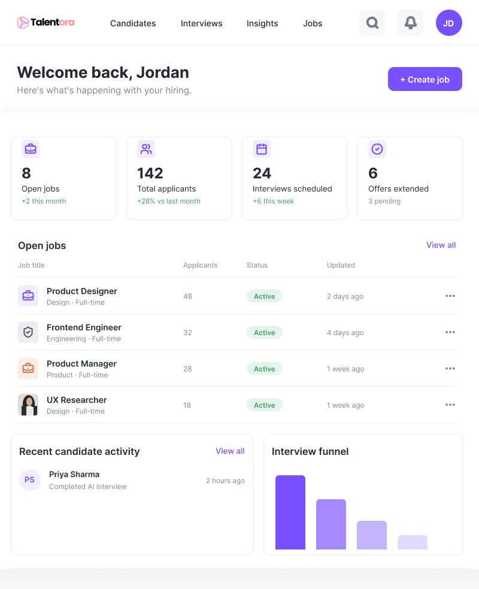
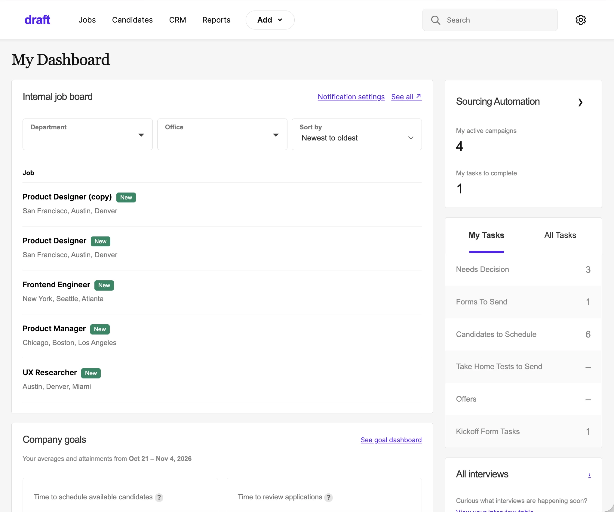
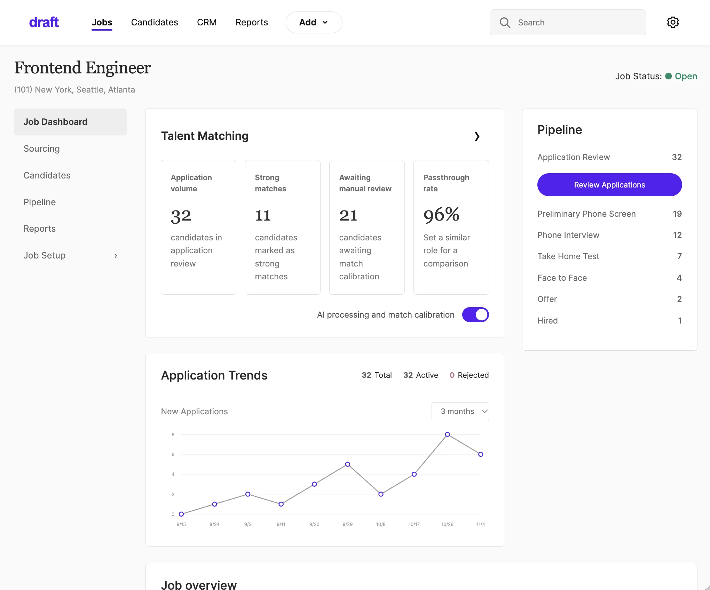
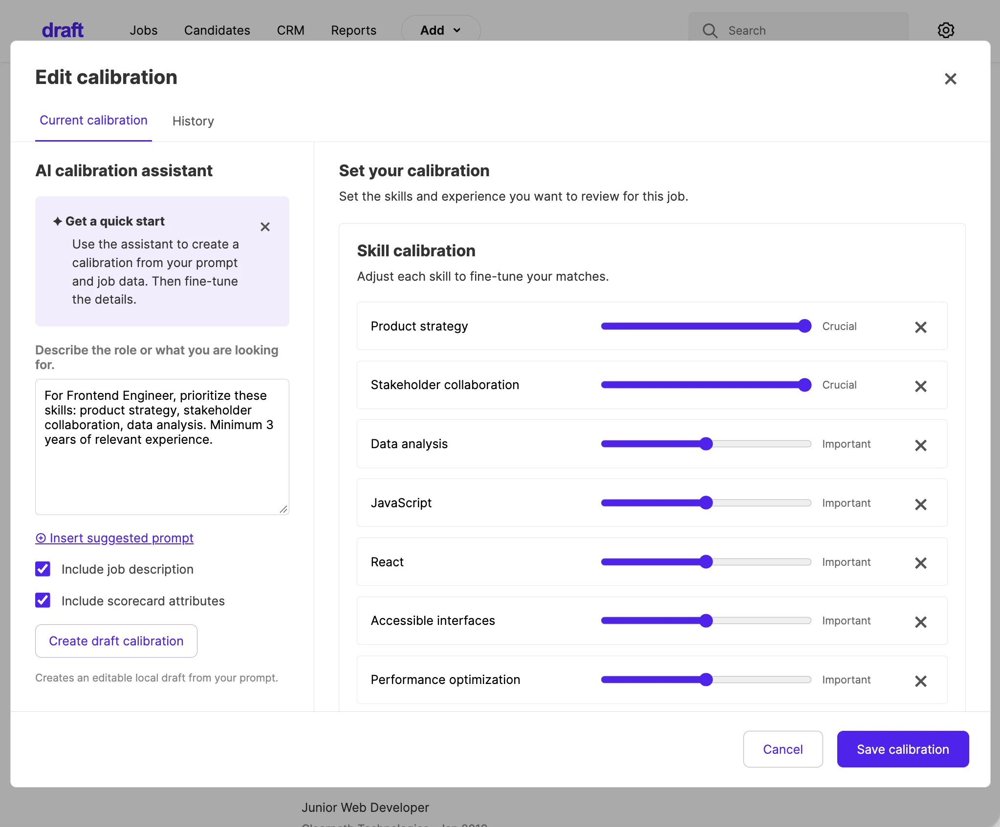
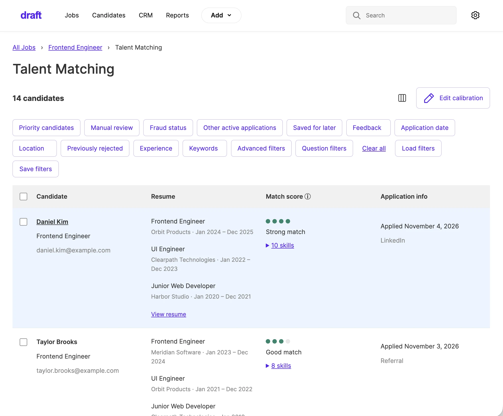
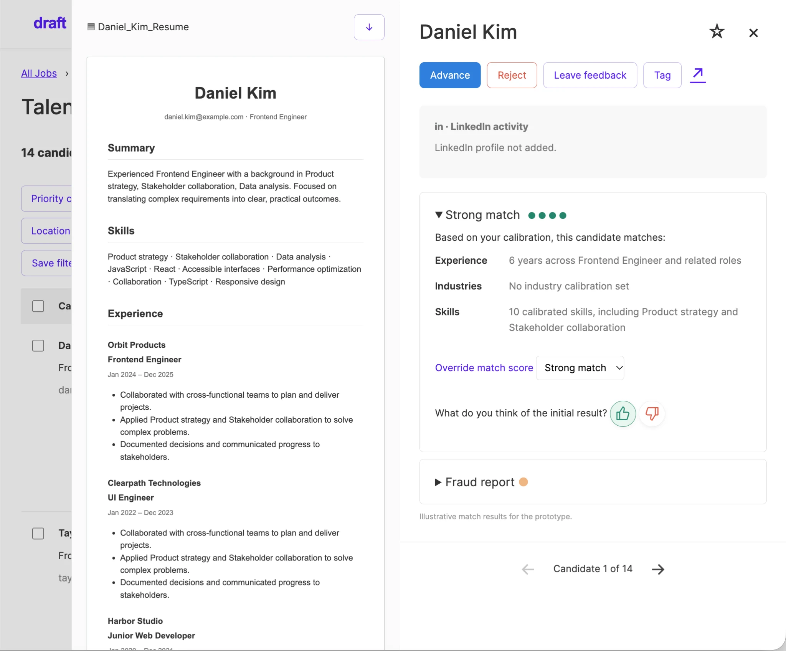

Draft Recruiting
Modernizing a hiring pipeline with AI
Hiring used to be slow, expensive, and time-consuming. Traditional recruiting workflows were outdated and difficult to navigate, costing organizations millions in hiring expenses while slowing down the search for talent. I redesigned the experience end to end, introducing an AI-powered recruiting agent that streamlines candidate screening, automates interviews, and makes finding and hiring the right people faster and more intuitive with Draft.
- Role
- Lead Product Designer
- Years
- 2025–2026
- Scope
- Workflow design, interface design, interaction prototyping, branding
Challenge
With no dedicated researchers, I had to learn and understand complex hiring workflows before redesigning anything. The challenge was to speed up candidate screening and interviews, saving time and money on hiring without sacrificing the human judgment essential to finding the right talent.
Impact
Collaboration
As lead product designer, I collaborated directly with business stakeholders, PMs, and engineers from vision through execution, keeping design aligned with business goals and technical feasibility at every step. I also owned the research myself, ensuring the redesign was grounded in real user workflows rather than assumptions.
Key Features
An overview of open roles, applicant counts, and recent activity helps recruiters see what needs attention.
Search, role filters, and hiring-stage tabs help recruiters organize applicants and find candidate records quickly.
Recruiters configure interview questions, while candidates review instructions, check their microphone, and practice before starting.
Recruiters organize talent pools, manage candidate relationships, and launch outreach campaigns from one connected CRM workspace.

Purpose-Built AI Experience
Draft’s scorecards bring individual interviewer evaluations together with an AI-generated summary of candidate feedback. The summary highlights recurring strengths, areas of concern, and observations across key attributes, helping recruiters understand the overall assessment without reading every scorecard separately. Interviewers’ original ratings and comments remain available so hiring teams can review the evidence behind the summary and make the final decision themselves.
Custom Components for the Draft Hiring Agent
Five connected views bring job management, calibration, and candidate review into a consistent hiring workspace.





Building the Draft Component Library
I created a shared component library for Draft, covering navigation, candidate profiles, calibration controls, and hiring workflows. Reusable patterns keep the experience consistent, make new screens easier to build, and give designers and developers a clear foundation to work from.